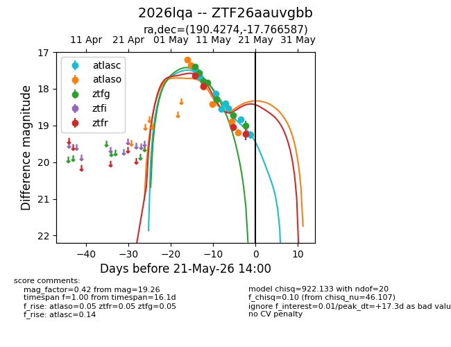
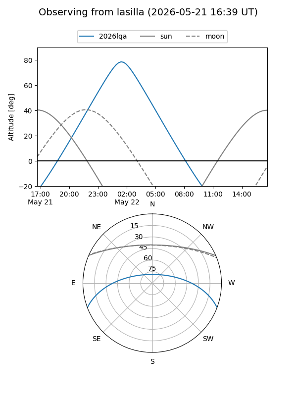
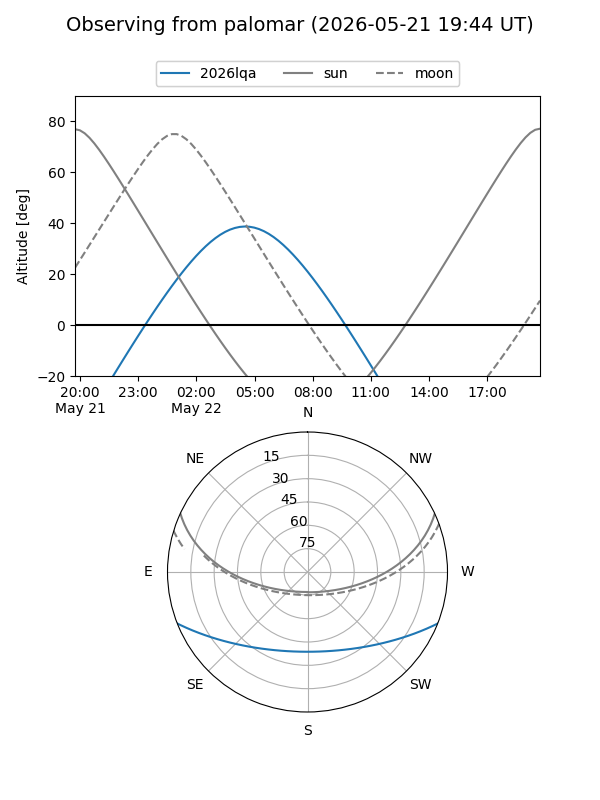
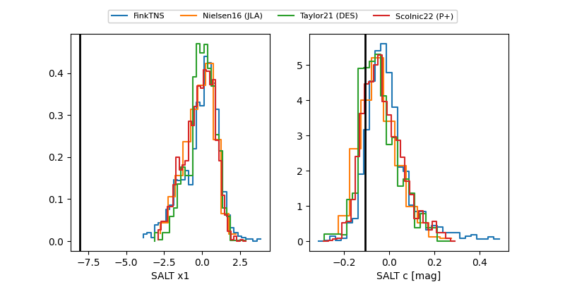

2026lqa
Target 2026lqa at 2026-05-21 14:02
Aliases and brokers:
lsst-FINK: link
lsst-Lasair: link
lsst-ALeRCE: link
ztf-FINK: link
ztf-Lasair: link
ztf-ALeRCE: link
TNS: link
YSE: link
alt names
ZTF26aauvgbb (ztf,fink_ztf)
2026lqa (tns,yse)
Coordinates:
equatorial (ra, dec) = 190.4274,-17.76659
equatorial (HMS+DMS) = 12:41:42.59,-17:45:59.71
galactic (l, b) = (299.6533,+45.04322)
Flags:
Photometry:
last atlasc=19.26, atlaso=19.18, ztfg=19.00, ztfr=19.23
8 atlasc, 6 atlaso, 7 ztfg, 4 ztfr detections
Lightcurve

Visibility


Additional plots
